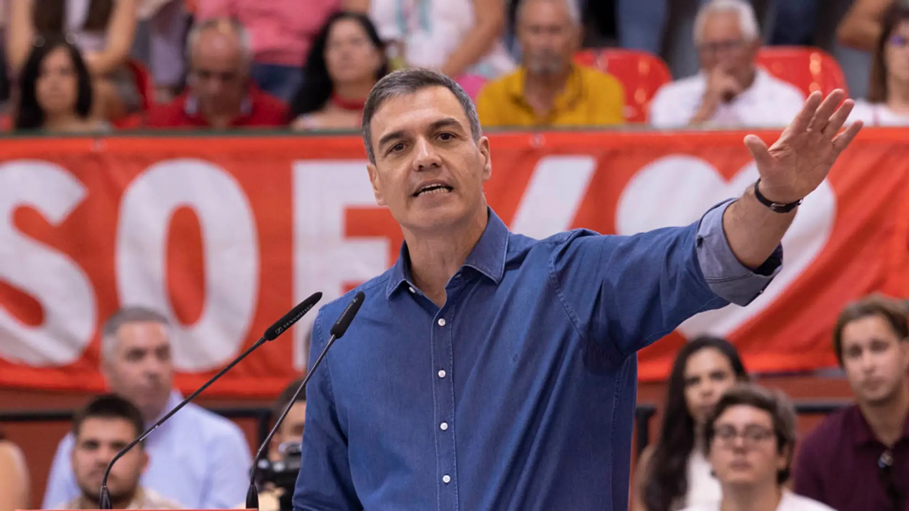

¡Haz click en la imagen!
- La falacia que presenta este video es el Argumento ad populum (“para el pueblo”). Se trata de provocar entusiasmo, con el fin de recabar apoyos, pero sin presentar pruebas. Esta falacia se suele ver mucho en política, en las campañas electorales.
- El video es un ejemplo de este tipo de falacia ya que defiende que la amnistía es buena para España, en el interés de España y en defensa de la convivencia entre españoles, pero no aporta ninguna prueba de por qué lo es. En este caso no se trata de una campaña electoral, pero sí de una necesidad de conseguir apoyos para que Sánchez sea investido presidente, y para ello, para conseguir los apoyos de los independentistas catalanes, tiene que aceptar la amnistía. En su discurso, en vez de decir que la amnistía es necesaria para que logre ser presidente, dice que la amnistía es buena para el pueblo español, pero no aporta ninguna prueba al respecto.
- Esta forma de argumentar es incorrecta debido a que Pedro Sanchez solo defiende la ley de amnistía por su propio interés después del resultado de las elecciones para seguir siendo presidente 4 años más cuando en la campaña electoral dijo que esta ley era imposible para la unidad de España.